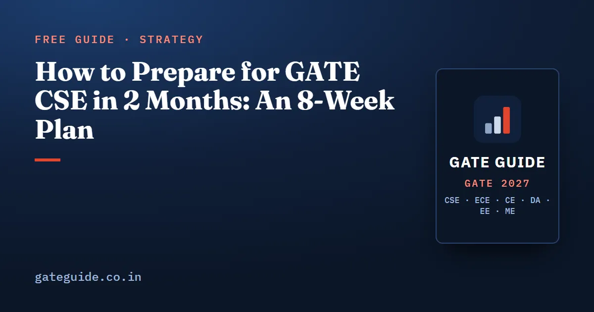

How to Prepare for GATE CSE in 2 Months: An 8-Week Plan

To prepare for GATE CSE in 2 months, stop trying to cover the syllabus and start covering the evidence. Study only the concepts GATE tests in almost every paper, then the second-tier ones, take five full mock tests, and keep the last two weeks free of new topics. If your paper is on 6 or 7 February 2027, the plan below starts on Monday 14 December 2026.
In this guide
Key takeaways
- Two months is enough to qualify and score respectably. It is not enough to study everything, so choose what to leave out.
- Weeks 1–5 cover the core, high-frequency concepts of every subject, in order of marks.
- Week 6 covers the most useful second-tier topics. Week 7 is mocks and revision. Week 8 is revision only.
- Take five full mocks, each in one 180-minute sitting, scored with the official negative marking.
- General Aptitude gets 20 minutes every day. Its 15 marks are the easiest in the paper.
First, know the paper you are preparing for
The CS paper is 3 hours long, with 65 questions for 100 marks. General Aptitude is worth 15 marks, Engineering Mathematics about 13, and the core CS subjects about 72. Wrong MCQ answers cost or of a mark. MSQ and NAT answers carry no negative marking, and MSQ gives no partial credit.
The exam runs on 6–7, 13–14 and 20–21 February 2027. If your paper is on a later date, start the plan one or two weeks later rather than stretching it. Confirm every date at gate2027.iitm.ac.in.
The rule for eight weeks: priority before coverage
Every topic in the syllabus falls into one of four priority levels. Priority A holds the concepts tested in almost every paper. By the book's analysis, they carry about 55–60 % of the marks. Priority B holds frequently asked second-tier forms, worth about 25–30 %. With eight weeks, you work only Priorities A and B.
For each subject, Priority A looks like this:
- Engineering Mathematics: eigenvalues and Cayley–Hamilton, conditional probability and Bayes, expectation and the named distributions, graph degree counting and Euler's formula, propositional logic.
- Programming and Data Structures: C pointer and 2-D array tracing, recursion tracing, BST insertion and search paths, heap build and delete, operator precedence.
- Algorithms: loop complexity, recurrences, Dijkstra, MST execution and properties, DFS edge types, dynamic programming.
- Operating System: scheduling timelines, synchronization code checks, paging arithmetic, page replacement, inode arithmetic.
- Computer Organization: cache tag, index and offset, pipeline timing with hazards, AMAT.
- Computer Networks: TCP congestion control, CIDR and subnetting, sliding-window arithmetic, delay calculations.
- Theory of Computation: language-class identification, regular expressions, minimum-state DFAs, closure and decidability.
- DBMS: SQL row counts, conflict serializability, normal forms, B+ tree capacity.
- Compiler Design: syntax-directed translation, LR conflicts, LL(1) tables.
- Digital Logic: Boolean identities, K-maps, 2's complement, IEEE-754.
The most repeated topics in GATE CSE article ranks the top 25 of these concepts in more detail.
The 8-week plan
This schedule applies the priority rule to the weeks before a 6 February paper.
| Week | Dates | Main work | Mock and checkpoint |
|---|---|---|---|
| 1 | 14–20 Dec | Engineering Mathematics and Digital Logic, Priority A | Start the error log; GA 20 minutes daily |
| 2 | 21–27 Dec | Programming and Data Structures and Algorithms, Priority A | Timed C traces on paper |
| 3 | 28 Dec–3 Jan | Operating System and Computer Organization, Priority A | First mock on Sunday 3 Jan |
| 4 | 4–10 Jan | Computer Networks (2027 list) and DBMS, Priority A | Analyse the first mock; re-study the three weakest subtopics |
| 5 | 11–17 Jan | Theory of Computation and Compiler Design, Priority A | Second mock on Sunday 17 Jan |
| 6 | 18–24 Jan | Priority B in order of marks: TLB and access time, Banker's algorithm, DP tables, FIRST/FOLLOW, fragmentation, counting formulas | Analyse the second mock; third mock on Sunday 24 Jan |
| 7 | 25–31 Jan | No new topics. Last-minute sheet daily; do-not-skip checklist | Fourth and fifth mocks under strict timing, Wednesday 27 and Sunday 31 Jan |
| 8 | 1–6 Feb | Revision sheet, formulas, traps, error log only; light GA | Sleep aligned to your slot; admit card, ID and route checked |
Each concept week follows the same routine. First, learn the concept until you can explain it on paper. Then solve recent PYQs on it topic-wise, roughly 2014–2026. Finish with a timed practice set. Log every wrong answer by subtopic, not by subject. After three mocks, that log is your real revision list.
The practice has to be timed because the recent papers were described by analysts as lengthy and calculation-heavy. Some targets worth reaching: cache field widths in 60 seconds, a scheduling Gantt chart in 3 minutes, and General Aptitude at 13 or more out of 15 within 18 minutes.
What to skip, and what not to skip
Cutting the right topics saves more time than studying faster.
| Skip or postpone | Reason |
|---|---|
| OSI and TCP/IP layer identification, framing, bridging, ARP, DHCP, ICMP, UDP, SMTP, FTP, email | Removed from the 2027 Computer Networks syllabus |
| NP-completeness and reductions; searching variants such as ternary search | Not in the 2027 syllabus text; absent from 2023–2026 papers |
| Disk geometry arithmetic, RISC/CISC and register windows | Removed from, or never named in, the COA syllabus |
| Gray, BCD and excess-3 codes | Last confident appearance in 2006 |
| Priority C practice sets | Lower marks per hour than Priority B in eight weeks |
Some items look skippable but are cheap insurance, because the 2027 syllabus names them in so many words. Read each once: the Quine–McCluskey tabular method, hardwired versus microprogrammed control, the socket API call order, LU decomposition and tuple relational calculus. Each is a short read, and the syllabus, not past frequency, decides what can be asked.
The book's eight-week route follows the same logic. It skips the analysis chapters and works from the ranked Top 100 concepts and a do-not-skip list of 160 concepts, each with the minimum competence required and the trap that usually costs the marks. See the book.
Choosing and spacing the five mocks
Five mocks in eight weeks means each one needs a clear purpose. Spread them out so that the first comes after three weeks of core concept work, and the last two sit in week 7. Aim for a mix across the five:
- A paper concentrated on the highest-frequency concepts, as your first diagnostic.
- A paper built on the question forms seen in 2021–2026: non-standard DP, TLB with multilevel paging, TCP congestion trajectories, cache traces and MSQ property sets.
- A NAT-heavy paper, to test numerical stamina and unit discipline.
- An exam-like mixed paper at real pacing.
- A final paper on the highest-confidence concepts.
In the book, Mocks 1, 3, 5, 9 and 10 are built for these five roles, which is why its eight-week route uses them.
Take every mock in one sitting of 180 minutes. Do General Aptitude first, in about 15 minutes. Score with the official scheme before reading any solution. The mock test strategy article explains the scoring and analysis method in full.
General Aptitude: the daily 20 minutes
Do not leave GA for the last week. Fifteen marks come from five 1-mark and five 2-mark questions, and they are rated easy every year. A daily 20-minute slot covers it:
- Reading comprehension and para-jumbles.
- A grammar and vocabulary list.
- One quantitative set on percentages, ratios, work and time, and speed.
- Data interpretation, with every quantity computed before you judge the options.
The GATE General Aptitude guide lists the question types.
If only two weeks are left
Shrink the plan to three things and nothing else:
- A last-minute revision sheet of formulas and traps, read once daily.
- A do-not-skip checklist, each item ticked only when you can do it from memory.
- Two full mocks under strict timing.
The last-month revision plan covers these final weeks in more detail. If you have more time, the 20-week GATE CSE preparation strategy shows how the same priorities extend into a full plan.
What a 2-month plan can realistically achieve
The General-category qualifying mark for CS was 27.6 in 2024 (IISc Bengaluru cut-off page), 29.2 in 2025 (IIT Roorkee) and 30 in 2026 (IIT Guwahati). The 2027 value will be computed afresh from the 2027 paper. The bands below are our judgement of what each score usually takes, not published figures, and they carry no rank estimates, because the rank a mark earns shifts every year:
- About 27–35 marks: General Aptitude plus Priority A of five or six subjects, attempted accurately. That is around the qualifying marks of 2024–2026.
- About 40–50 marks: GA at 12 or more, Priority A of every subject, and no more than two wrong MCQs.
Accuracy matters as much as coverage here. Turning three wrong 2-mark MCQs into skips gains two marks, and turning them into correct answers gains eight.
The book puts the whole compressed route in one place: the Top 100 concepts, the do-not-skip list, all ten mocks with worked solutions, and the last-minute sheet. Get the book.
Frequently asked questions
Can I crack GATE CSE in 2 months?
You can qualify and score respectably in two months if you study only the most frequently tested concepts and attempt accurately. The General-category CS qualifying mark was 27.6 in 2024, 29.2 in 2025 and 30 in 2026, per each year's official cut-off page. In our judgement, General Aptitude plus the core concepts of five or six subjects, attempted accurately, reaches that range. A top rank needs a wider base.
Which subjects should I focus on in the last 2 months for GATE CSE?
Start with the subjects that carry the most marks. Do Engineering Mathematics and General Aptitude first, then Programming and Data Structures and Algorithms, then Operating System and Computer Organization. Within every subject, study only the concepts that appear in almost every paper before moving to second-tier ones.
How many mock tests should I take in 2 months for GATE CSE?
Five full mocks are enough in an eight-week plan, spaced so that each is followed by a proper analysis. Take the first after about three weeks of concept work, one each in weeks 5 and 6, and the last two in week 7 under strict timing. Do not take a full mock in the exam week.
Should I solve previous year papers if I have only 2 months?
Yes, but topic-wise and selectively. Solve recent previous year questions, roughly 2014 to 2026, for the high-priority concepts you are studying that week, and skip any question on a topic removed from the 2027 syllabus, such as ARP, DHCP, ICMP, UDP, SMTP or FTP in Computer Networks.
What should I do if only 2 weeks are left before GATE CSE?
Stop learning new topics. Read a last-minute revision sheet of formulas and traps every day, work through a do-not-skip checklist from memory, and take two full mock tests under strict exam timing. Spend any remaining time on your own error log rather than on new material.
Sources
- GATE 2027 official website (IIT Madras)
- GATE 2027 question paper pattern
- GATE 2026 cut-off marks (IIT Guwahati, official)
- GATE 2025 cut-off marks (IIT Roorkee, official)
- GATE 2024 cut-off marks (IISc Bengaluru, official)
Dates, fees and the syllabus are set by the GATE 2027 organising institute and can change. Always confirm at gate2027.iitm.ac.in.